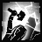

+ BLACK ROAD CHALLENGE +
THE BLACK ROAD CHALLENGE
The Black Road challenge is the hardest challenge in Median XL. It consists of five trials, ranging from easy to very difficult.
Killing a boss
This challenge requires you to 'kill' a boss. This means that you need to be physically present at
the battle and near the boss when it dies before you can use the cube recipe that grants you
the
reward.
If you succeed in killing the target boss, you get a whirling red overlay that looks like three rotating bolts:

You now have 30 seconds to perform the cube recipe. If you are too slow and the red overlay vanishes, you have to do it again!
Warning: This does not work if the monster is killed by reflected damage, due to a Diablo II engine limitation. Please use different means of killing the target.
You need your Class Charm
This challenge requires you to have your 'Class Charm'. This is a charm that drops in the Kurast
3000 BA uberlevel. If you did the Ennead Challenge, you already have one.
If not, see THIS PAGE for more information about Kurast 3000 BA.
There are 7 class charms, one for each character class.
THE FIVE TRIALS
It is said that the demon Kabraxas rewards his followers with infernal powers: the ability to heal, cast apocalyptic spells or fight like no mere human ever could.
To obtain Kabraxas' favour, you will need to pass his tests of faith first. These tests are based on the human weaknesses Kabraxas exploits to corrupt mortals. Thankfully, you are well above being corrupted... right?
The Black Road Challenge consists of five parts. You can do them in any order, but you need to do all of them if you want the reward.
1. Trial of Fear
Overcome your fear of demons by tackling the Butcher in Terror difficulty. Go to The Hole Level 2
and summon him, then kill him. Cube the charm while the red swirls are on your character.
See THIS PAGE for more information on the Butcher.
[Class Charm] -> returns [Class Charm] with note of completion (Fear)
2. Trial of Greed
Material wealth is a sign of demonic corruption. To pass this trial, keep 666,666 gold or more on your
character (not your stash), then use the recipe to complete the trial.
[Class Charm] -> returns [Class Charm] with note of completion (Greed)
3. Trial of Contrition
Kabraxas is almost impressed with your combat prowess against demons. But how about other humans? To
complete this Trial, summon and kill Shaman King Koth on Terror difficulty. Cube the charm while the red
swirls are on your character.
See THIS PAGE for more information about King Koth.
[Class Charm] -> returns [Class Charm] with note of completion (Contrition)
4. Trial of Knowledge
Obtain untold wisdom by collecting the positronic brains of the five Robot Bosses in Fauztinville in
Terror difficulty. Kill the Robot Bosses and snap up their Brains.
See THIS PAGE for more information about Fauztinville.
[Class Charm] + Alpha, Beta, Gamma, Delta, Epsilon Brain -> returns [Class Charm] with note of completion (Knowledge)
Fauztinville is a huge level, and the Robot Bosses are fairly well hidden. You may need to explore the whole level. One of the bosses requires a teleportation ability to access; if you cannot teleport, use an item with charges of a teleportation skill, like the runeword Pax Mystica or the ubercharm Moon of the Spider. A second boss is at the end of a hidden passage, but can be accessed through teleportation as well.
5. Trial of Blood
Kabraxas' element is Fire. Try and sway the Amazon Islands to your cause by eliminating the Priestesses
of the amazon gods of Ice and Lightning. But do it quickly. Kabraxas has no time to waste on bumbling
humans like you.
Your targets are Skovos, Priestess of Karcheus and Lycander, Priestess of Zerae. Both can be found in the Tran Athulua uberlevel. Go kill them on Terror difficulty.
The catch is that after you kill either one, you now have only 30 seconds to kill the other and then cube the charm. The timer starts to tick down after your first kill. You can only complete this Trial if you lead them to the same area and kill them quickly, one after the other.
See THIS PAGE for more information about Tran Athulua.
There is a third Priestess on the level, Philios, Priestess of Hefaetrus. Make sure you kill the correct Priestesses.
The amazon bosses have relatively low health, and you don't want to kill them too early or
you would have to restart the trial. A few helpful tips to keeping the amazons alive:
Try not using damaging buffs such as Queen of Blades or Symhpony of Destruction, disable reanimates via
the RIP recipe (if you want the reanimates later, equip a temporary item that you won't be using anymore
and put the RIP recipe on it), and if possible use abilities of the element that the amazon boss is
immune to. A Sorceress, for example, could spread the area around Skovos with Abyss.
[Class Charm] -> returns [Class Charm] with note of completion (Blood)
Black Road Completion
You did all five Challenges above? Great! Buy four Sacrifical Hearts (sold by magic item vendors) and
cube them with your class charm. If you completed all five Challenges, this will add a number of bonuses
and unlock the Level Challenge Skill in your skill tree.
[Class Charm] + Sacrifical Heart x4 -> returns [Class Charm] with added bonuses
This upgrade recipe adds the following bonuses:
Amazon
+150 to Life
+150 to Mana
Unlocks your Black Road Challenge skill
Assassin
+150 to Life
+150 to Mana
Unlocks your Black Road Challenge skill
Barbarian
+150 to Life
+150 to Mana
Unlocks your Black Road Challenge skill
Druid
+150 to Life
+150 to Mana
Unlocks your Black Road Challenge skill
Necromancer
+150 to Life
+150 to Mana
Unlocks your Black Road Challenge skill
Paladin
+150 to Life
+150 to Mana
Unlocks your Black Road Challenge skill
Sorceress
+150 to Life
+150 to Mana
Unlocks your Black Road Challenge skill
Your free bonus skill
This skill can be found at the bottom right of your third skill tab. When you complete the Black Road
Challenge, upgrade your class charm and keep it into your inventory. This allows you to put skill points
into the skill.
| Name & Class | Icon | Effect |
|---|---|---|
| War Spirit [Amazon] |
 |
Many of the amazon deities represent an aspect of war. The deity's spirits, summoned by an
amazon high priestess or warrior queen, protect her in battle by striking down her enemies,
seemingly out of nowhere. Effect: periodically emits spike novas that deal weapon damage |
| Psychic Scream [Assassin] |
 |
There are two schools in psychic training. The most common school promotes balance of mind and
peace of thoughts. This is a creation of the other school: a primal scream that overwhelms
weaker minds with pain and confusion. Effect: short ranged shockwave that forces enemies to flee |
| Thundergod [Barbarian] |
 | A warrior who has his eyes on the throne of his tribe is sent to the summit of Mt. Sescheron to
await the next thunderstorm. If he survives, he may have learned something valuable about the
forces of nature. Effect: adds stun damage and periodically emits stun novas |
| Lifeshield [Druid] |
 |
Aside from their healing effect on humans and other animals, the juice of the Glor-An-Fhaidha's
fruits can be applied to armour, making it as hard as the bark of a thousand year tree. Passive effect: consuming a Goodberry also increases defence |
| Graveyard [Necromancer] |
 |
The deathspeaker establishes an aura powered by the emanations of a demon's wicked thoughts,
conjuring torture equipment and striking the demon with the punishments it desires most to
inflict upon humanity. Effect: when activated, periodically shoots deadly spiked balls at enemies |
| Blessed Life [Paladin] |
 |
A life of worship teaches the warrior of Zakarum the futility of evil. The denizens of hell are
but vermin to an emissary of the Light. Passive effect: reduces damage taken and speeds up healing apples |
| Arcane Fury [Sorceress] |
 |
Hell hath no Fury like a woman scorned. This metamagic ability drastically speeds up
spellcasting, movement and mana regeneration for a short period of time. Effect: temporarily increases casting speed and mana regeneration |